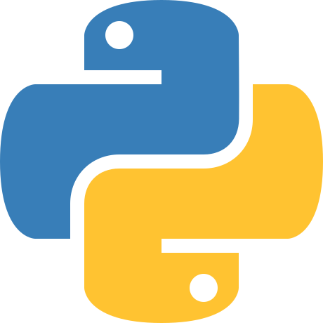
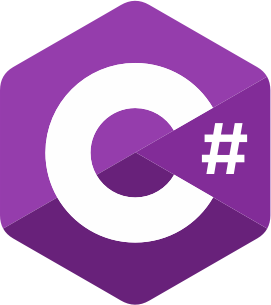
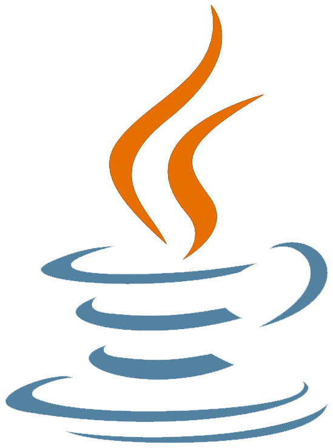

O językach programowania
Prowadzenie
Jak już mogliście przeczytać istnieje ponad 700 języków z czego 50 jest czynnie używanych.
Na tej stronie postaram się wam odbjaśnić najpopularniejsze języki. Oraz dowiecie się od jakiego języka zacząć i jakie są miedzy nimi różnice
Od jakiego języka zacząć?
Wiesz juz że istnieje wiele języków programowania, ale co tak naprawdę wybrać na początek?
Najprostszym językiem jest Python. Posiada on prostą składnie, jest uniwersalny i możemy w nim stworzyć wiele różnych projektów i jest prosty do opanowania oraz od niego najlepiej rozpocząć swoją kariere z programowaniem. Jak opanujemy pythona będziemy mogli się przestawić na Jave, C#, C++ czy inne podobne języki i będzie nam dużo łatwiej je nam opanować. Oprócz tego nasza poźniejsza decyzja w jakim języku bedziemy programować może zależeć co będziemy chcieli tworzyć.
Wyjaśnienie języków
Python 
Jak wyżej zostało wspomniane python jest najprostszym językiem i jest bardzo dobry do zaczęcia swojej przygody. Posiada prostą składnię i jest podobny do pseudokodu. Posiada on też wiele bibliotek jak i frameworków przez które python jest bardzo funkcjonalny. Może on też być wykorzystywany w prawie każdym środowisku i nie straci on na wydajności. Python jest też wszechstronyn ponieważ można w nim tworzyć aplikacje mobline, aplikacje komputerowe, tworzyc strony internetowe i wiele innych.
"Hello, World!" w pythonie:
print("Hello!, World!")
C# 
C# i .NET jest nieodłącznym elementem pracy jako programista C#. Najprościej rzecz ujmując, jest to framework (zestaw przydatnych funkcji, które powtarzają się w większości aplikacji, takich jak np. logowanie). Do pracy z tym frameworkiem używa się właśnie języka C#. C# wykorzystuje też Unity czyli silnik do pisania gier.
Język ten posiada też doskonałą dokumentacje zrobioną przez microsoft. Na oficjalnej stronie znajdziesz masę wartościowych materiałów do nauki, przykłady zastosowań i omówienie najpopularniejszych problemów.
"Hello, World!" w C#
System.Console.WriteLine("Hello, World!")
C++ 
C++ jest językiem programowania ogólnego przeznaczenia wspierającym paradygmat imperatywny i obiektowy oraz programowanie generyczne.
Język C++ łączy w sobie niskopoziomowe programowanie dostosowane do konkretnych architektur komputerowych z programowaniem wysokopoziomowym, które może być zupełnie niezależne od specyfikacji urządzenia, na którym program jest uruchamiany. C++ wykorzystuje też silnik do tworzenia gier - Unreal Engine lecz C++ wykorzystuje sie w tworzeniu wielu gier.
"Hello, World!" w C++
include <iostream>
using namespace std;
int main () {
cout << "Hello, World!" << endl;
return 0;
}
Java 
Java to wysokopoziomowy język programowania ogólnego zastosowania. Jest w pełni obiektowa, z wyjątkiem kilku typów prostych. Java jest łatwo przenośna, gdyż jest interpretowana przez wieloplatformową maszynę wirtualną Javy (Java Virtual Machine). Java reklamuje się sloganem „Napisz raz, uruchom wszędzie!” jednak nie zawsze jest to takie proste - jest to uzależnione od obecności JVM i ograniczone.
"Hello, World!" w Javie
public class HelloWorld{
public static void main(String[] args){
System.out.println("Hello, World!");
}
}
PHP 
PHP to skryptowy język programowania umożliwiający tworzenie stron www, sklepów internetowych, a także aplikacji webowych. Język PHP dzięki swoim zaletom jest wykorzystywany jako baza do tworzenia różnego rodzaju rozwiązań internetowych takich jak: frameworki, CMS, systemy CRM czy sklepy internetowe. Wykorzystuje też się go na stronach internetowych do komunikacji z serwerem.
"Hello, World!" w PHP
Na stronie trzeba zamieścić znacznik <?php ?>
<?php
echo "Hello, World!";
?>